Manuale Utente — Tracker Porti
🇬🇧 English version: manuale.en.md · index.en.html
Guida completa all’uso di Tracker Porti per l’utente. Spiega cosa puoi fare e come farlo, schermata per schermata.
Questo manuale copre l’uso quotidiano dell’applicazione. Le funzioni di amministrazione (gestione utenti, ruoli, log di sistema) non sono trattate.
Cos’è Tracker Porti
Tracker Porti monitora in tempo reale il traffico navale AIS in una o più aree geografiche a tua scelta. Raccoglie i dati che le navi trasmettono via AIS, li analizza, calcola per ogni imbarcazione un punteggio di rischio e presenta il tutto su mappe e tabelle interattive.
Puoi:
- monitorare più porti/aree contemporaneamente, ciascuno con il proprio flusso dati;
- vedere le navi presenti, quelle passate e le statistiche di traffico;
- seguire singole navi ovunque vadano, anche fuori dalle aree monitorate;
- consultare il dettaglio completo di ogni nave (identità, rotta, sanzioni, comportamenti sospetti…);
- ricevere notifiche in-app e su Telegram su eventi rilevanti;
- esportare i dati (CSV, GeoJSON, KML) e fare backup.
Non servono conoscenze tecniche per usarlo.
Avvio rapido
- Apri il browser all’indirizzo del server (es.
http://localhost:3000). - Accedi con le tue credenziali (vedi Account e accesso).
- Nella barra laterale sinistra scegli l’area da visualizzare nel menu a tendina Area:.
- Premi ▶ Avvia il monitoraggio per iniziare a ricevere dati per quell’area.
- Le navi compaiono automaticamente sulla mappa e nella tabella.
Account e accesso
L’applicazione è protetta da login: per usarla devi autenticarti. Ogni utente ha i propri dati (aree, navi seguite, notifiche, impostazioni), separati da quelli degli altri.
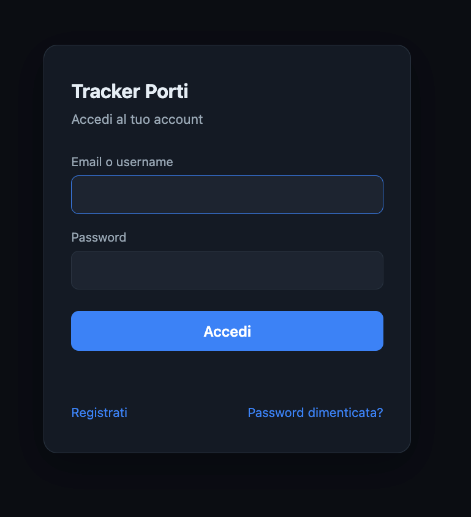
Registrarsi
Dalla pagina di accesso segui il link Registrati e inserisci nome, cognome, email e password. Il nuovo account viene creato in stato “in attesa”: potrai accedere solo dopo l’approvazione di un amministratore. Una volta approvato, effettui il login normalmente.
Accedere
Nella pagina di login inserisci la password e, come identificativo, lo username oppure l’email (vanno bene entrambi). La sessione resta valida per diversi giorni: di norma non devi reinserire le credenziali a ogni visita.
Dopo troppi tentativi falliti ravvicinati (10 in 15 minuti) l’accesso viene bloccato temporaneamente per qualche minuto, come protezione anti-bot. Attendi e riprova.
Disconnettersi
Usa il widget account in alto a destra e scegli Esci (logout).
Password dimenticata
Nella pagina di login c’è il link Password dimenticata?. Al momento l’invio via email non è attivo: per reimpostare la password rivolgiti a un amministratore, che genererà per te un link monouso (valido 24 ore) con cui impostarne una nuova.
I tuoi dati
Ogni utente ha i propri:
- aree di monitoraggio;
- impostazioni (preferenze notifiche, opzioni mappa, lingua, area di default);
- navi segnalate ★ e navi seguite;
- notifiche.
Vedi i dati AIS delle navi che si trovano dentro le tue aree. Le sorgenti di arricchimento (VesselFinder, MarineTraffic, sanzioni, ecc.) e la configurazione dello score di rischio sono invece condivise e gestite dagli amministratori.
Se un amministratore ti inserisce in un gruppo di utenti, alcune cose (aree, navi seguite/segnalate/silenziate, preferenze di notifica e mappa) vengono condivise con gli altri membri: ciò che aggiungi tu compare a loro e viceversa. Restano personali il collegamento Telegram e la lingua dell’interfaccia.
🚀 Primi passi (tutorial)
Hai appena effettuato il primo accesso? Parti da qui. Questa guida rapida ti porta dalle prime cose da fare — definire un’area, avviare il monitoraggio, cercare e seguire una nave — al resto dell’app. Ogni passo rimanda alla sezione dettagliata più avanti nel manuale. Fatto questo, sei operativo; il resto del manuale è la consultazione di dettaglio.
Passo 1 — Definisci la tua prima area
Un’area è il riquadro geografico che vuoi sorvegliare (un porto, un tratto di mare). Al primo accesso potresti non averne ancora una tua.
- Nella barra laterale premi 🗺 Aree.
- Dai un nome all’area (es. “Porto di Bari”).
- Definisci i confini nel modo più semplice: sposta e ingrandisci la mappa finché inquadri la zona, poi premi 🎯 Cattura vista corrente (in alternativa inserisci a mano le coordinate SW e NE).
- Premi ＋ Aggiungi area: l’area viene salvata e inizia subito a ricevere dati.
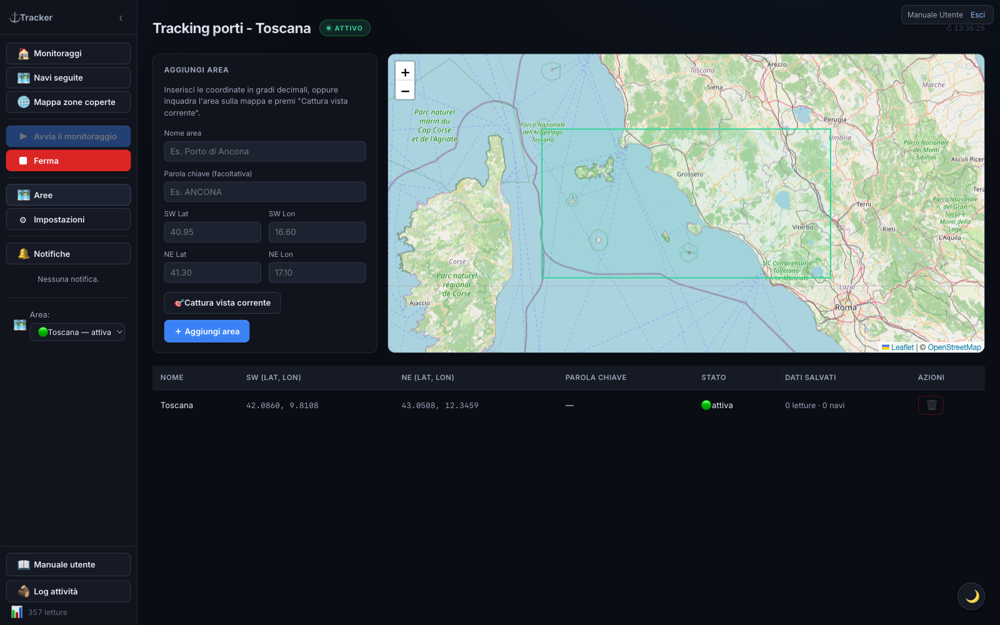
→ Dettagli completi in Gestione aree.
Passo 2 — Avvia il monitoraggio e guarda le navi
- Torna ai monitoraggi con 🏠 Monitoraggi.
- Seleziona l’area nel menu a tendina Area: in basso nella barra laterale.
- Premi ▶ Avvia il monitoraggio: in alto compare il badge ● ATTIVO.
- Nel giro di poco le navi appaiono sulla mappa (colorate per rischio) e nella tabella sotto. Clicca una riga per aprire il dettaglio della nave.
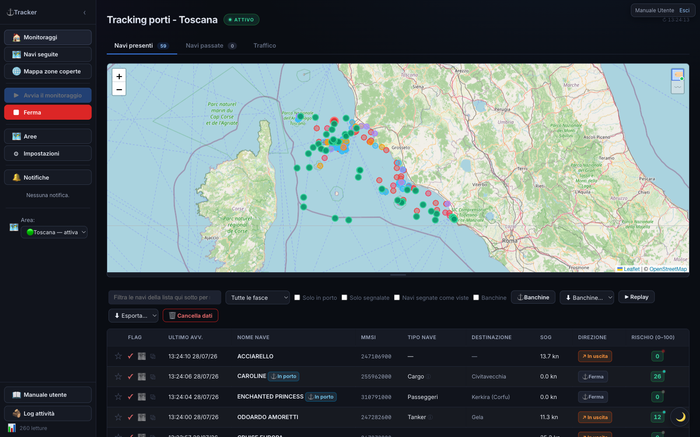
→ Dettagli in Le tre schede principali e Dettaglio nave.
Passo 3 — Cerca e segui una nave
Le navi seguite le tieni d’occhio ovunque vadano, anche fuori dalle tue aree.
- Barra laterale → 🗺 Navi seguite.
- Nella barra di ricerca digita il nome o l’MMSI della nave e premi 🔍 Cerca.
- Aspetta che la finestra dei risultati recuperi identità e posizione live (fino a ~90 s).
- Quando si abilita 🗺 Segui nave, premilo: la nave entra tra le tue seguite.
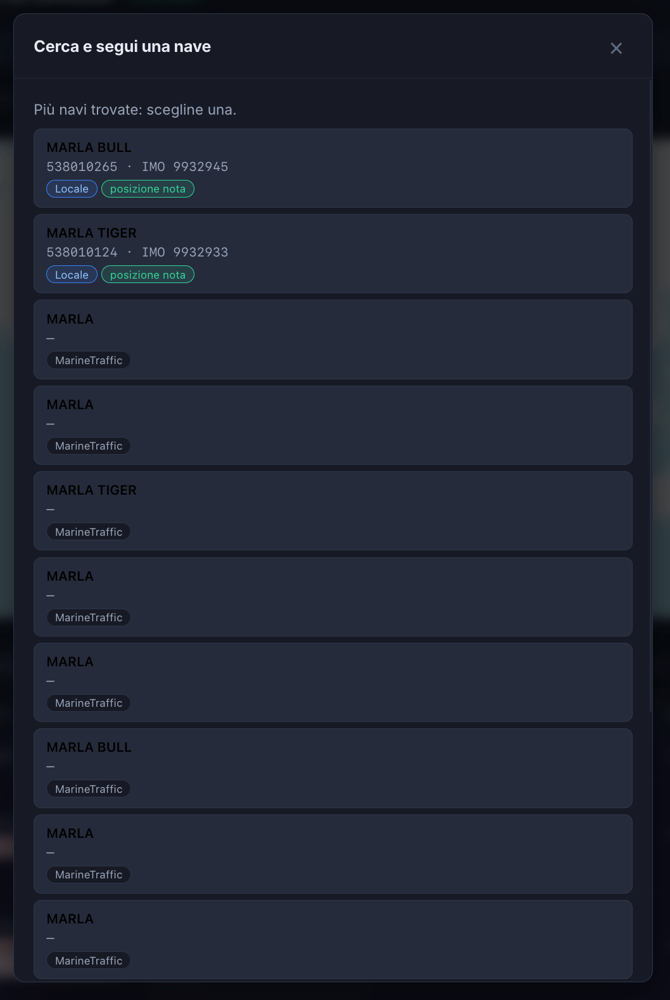
→ Dettagli in Navi seguite.
Passo 4 — Personalizza (facoltativo)
- ★ Segnala una nave per evidenziarla; ✓ Vista per marcare quelle già controllate.
- Attiva le 🔔 Notifiche (rientro nave, score alto, ecc.) e, se vuoi, collega Telegram.
- Cambia tema chiaro/scuro con il pulsante 🌙 / ☀️ in basso a destra.
→ Vedi Notifiche e Impostazioni.
Tutto qui per iniziare. Da adesso in poi il manuale entra nel dettaglio di ogni funzione.
Interfaccia principale
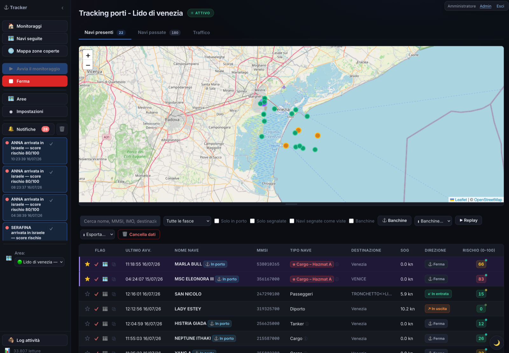
Barra laterale (sinistra)
| Elemento | Funzione |
|---|---|
| 🏠 Monitoraggi | Torna alla home (schede Navi presenti / passate / Traffico) |
| ▶ Avvia il monitoraggio | Avvia la ricezione dati AIS in tempo reale per l’area visualizzata |
| ■ Ferma | Interrompe la ricezione per l’area corrente (i dati già raccolti restano) |
| 🗑 Cancella dati | Elimina le letture dell’area visualizzata — irreversibile |
| 🗺 Aree | Gestione aree: elenco, mappa, aggiunta e rimozione (vedi Gestione aree) |
| 🌐 Mappa zone coperte | Mappa mondiale della copertura AIS (vedi Mappa delle zone coperte) |
| ⚙ Impostazioni | Impostazioni dell’app, incluse le schede tecniche |
| 🔔 Notifiche | Mostra/nasconde la lista notifiche; un badge rosso conta quelle da leggere |
| Area: | Seleziona la zona da visualizzare. Non avvia né ferma lo stream — ogni area ha il suo. 🟢 = stream attivo, ⚪ = spento |
| N letture | Contatore in basso: posizioni ricevute nella sessione |
Barra di stato (in alto)
Il badge ● ATTIVO (punto verde pulsante) indica che lo stream dell’area visualizzata è in funzione. INATTIVO indica che la ricezione per quell’area è ferma.
Cambio tema
Il pulsante 🌙 / ☀️ in basso a destra alterna tema scuro (predefinito) e chiaro.
Le tre schede principali
La home mostra tre schede: Navi presenti, Navi passate e Traffico.
1. Navi presenti
Le navi rilevate nell’area nelle ultime ore, con mappa e tabella in tempo reale.
Mappa: le navi sono indicatori colorati per fascia di rischio. Puoi trascinare il bordo inferiore della mappa per ridimensionarla. In alto a destra due pulsanti (passaci sopra col mouse per vedere a cosa servono): 🏷 mostra il nome accanto a ogni nave — se sono poche resta sempre visibile, se sono tante compare solo al passaggio del mouse; 〰 (spento di default) mostra il tragitto recente di ogni nave, con la stessa logica: fisso se poche navi, solo al passaggio del mouse sulla singola nave se sono tante. Le scelte restano ricordate per i tuoi accessi successivi.
Tabella — colonne:
| Colonna | Significato |
|---|---|
| Icone azione | Segnala ★, marca come vista ✓, apri su VesselFinder ⧉ |
| Ultimo avv. | Data e ora dell’ultima posizione ricevuta |
| Nome nave | Nome dell’imbarcazione |
| MMSI | Codice identificativo univoco |
| Tipo nave | Categoria (cargo, tanker, passeggeri…) |
| Destinazione | Porto dichiarato. I codici UN/LOCODE (es.
ITTAR) sono tradotti nel nome del porto (es.
“Taranto”) |
| SOG | Velocità sul fondo (nodi) |
| Direzione | ↙ In entrata / ↗ In uscita / ⚓ Ferma |
| Rischio (0–100) | Punteggio (verde/giallo/rosso) |
Ordinamento: clicca l’intestazione di una colonna per ordinare; un secondo clic inverte l’ordine (▲/▼). L’ordinamento persiste durante gli aggiornamenti automatici.
Pulsanti per riga:
- ☆ / ★ Segnala — evidenzia la nave in viola come “da esaminare”. Clicca di nuovo per togliere.
- ✓ Vista — segna la nave come già esaminata (la riga si attenua). Utile per non perdere le novità.
- ⧉ VesselFinder — apre la scheda della nave sul sito VesselFinder.
Colori delle righe:
| Colore | Significato |
|---|---|
| Rosso 🪖 | Nave militare (segnalata automaticamente) |
| Rosso | Punteggio di rischio alto (71–100) |
| Viola | Nave segnalata manualmente |
| Attenuata | Nave marcata come “vista” |
| Badge ⚓ In porto | Nave attualmente ormeggiata |
Clicca su una riga per aprire il dettaglio completo.
Filtri (barra sopra la tabella): ricerca per nome/MMSI/IMO/destinazione, filtro per fascia di rischio, Solo in porto, Solo segnalate, Navi segnate come viste, e la casella Banchine per l’overlay degli attracchi. A destra i pulsanti ⚓ Banchine, ⬇ Esporta… e ▶ Replay.
Banchine (caratterizzazione automatica degli attracchi)
Attivando l’overlay Banchine il sistema mostra dove le navi attraccano e di che tipo sono, imparandolo da solo.
Come funziona:
- Rilevamento attracchi — a ogni sosta in porto il sistema registra un punto di attracco (centroide delle posizioni della nave ferma nell’area).
- Raggruppamento — i punti vicini vengono raggruppati in banchine (il contorno è l’inviluppo dei punti del gruppo).
- Caratterizzazione — per ogni banchina si contano le categorie di nave. Quando una categoria supera il 60% degli attracchi (su almeno 10 attracchi), la banchina viene colorata con quella categoria; sotto soglia è “mista” (grigia). Con meno di 10 attracchi resta tratteggiata.
Usare l’overlay:
- Spunta Banchine nella barra dei filtri per mostrarlo/nasconderlo (la scelta è ricordata).
- Ogni banchina ha un poligono colorato e un pallino centrale sempre visibile.
- Clicca una banchina per vedere nome, caratterizzazione, numero di attracchi, distribuzione per categoria, distribuzione per tipo di carico ed eventuale quota di merci pericolose (☢).
Correggere a mano (pulsante ⚓ Banchine): apre il pannello di gestione, dove puoi rinominare, forzare la categoria, unire più banchine, eliminare una banchina o ricalcolare subito. Cliccando una riga della lista la mappa si centra su quella banchina.
Le banchine modificate a mano (geometria, nome, categoria forzata) sopravvivono ai ricalcoli automatici: le correzioni non vengono mai sovrascritte.
Overlay OpenSeaMap. Nelle impostazioni (→ Generali, attivo di default) ci sono due interruttori indipendenti: il Livello nautico (tile) disegna i simboli nautici OpenSeaMap (boe, fari, luci, segnali, ancoraggi) come immagine unica; i Marcatori (selezionabili) disegnano marcatori ⚓ con ormeggi/banchine/porti ufficiali da OpenStreetMap, filtrabili per categoria. I dati sono gratuiti (nessuna chiave API) e nei porti commerciali possono essere incompleti.
Replay storico (rivedere il traffico passato)
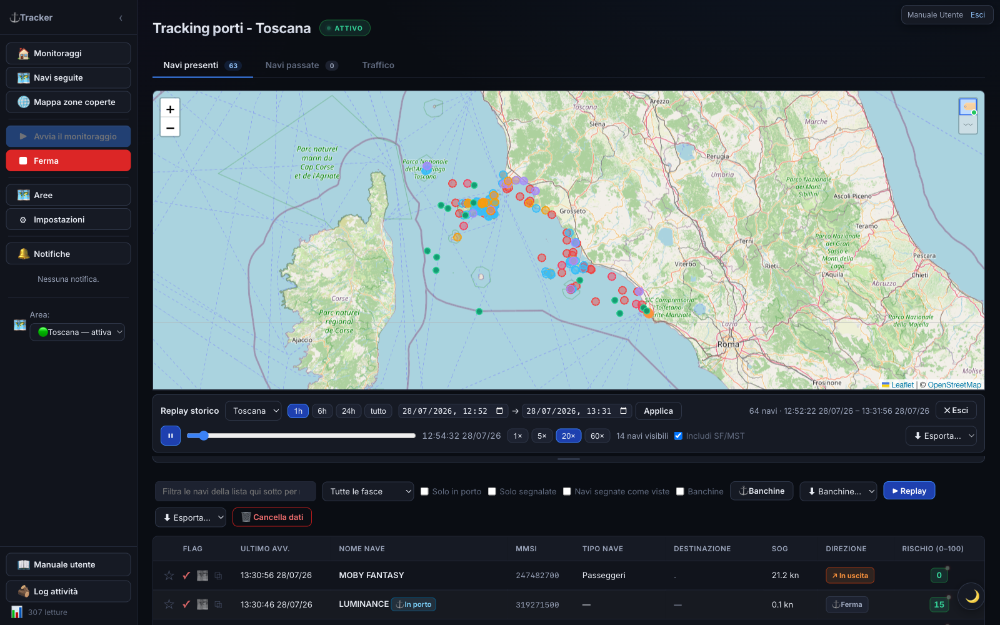
Il pulsante ▶ Replay rivede come si è mosso il traffico dell’area in un intervallo passato. In modalità replay i marker live vengono nascosti e compare una barra di controllo:
- Area — quale delle tue aree rivedere.
- Finestra — preset 1h / 6h / 24h / tutto, oppure un intervallo personalizzato. Si aggancia automaticamente al dato più recente disponibile.
- ▶ / ⏸, la barra di scorrimento e le velocità (1× / 5× / 20× / 60×).
Ogni nave si muove interpolata tra le sue posizioni reali, lascia una scia che sfuma ed è colorata per rischio; cliccala per il dettaglio. In un buco di segnale lungo la nave viene nascosta invece di “teletrasportarsi”. Premi ✕ Esci per tornare al live.
Se hai attive le integrazioni ShipFinder/MyShipTracking compare il toggle Includi SF/MST (acceso di default), che usa anche quelle posizioni per riempire i tratti in cui l’AIS è muto.
2. Navi passate
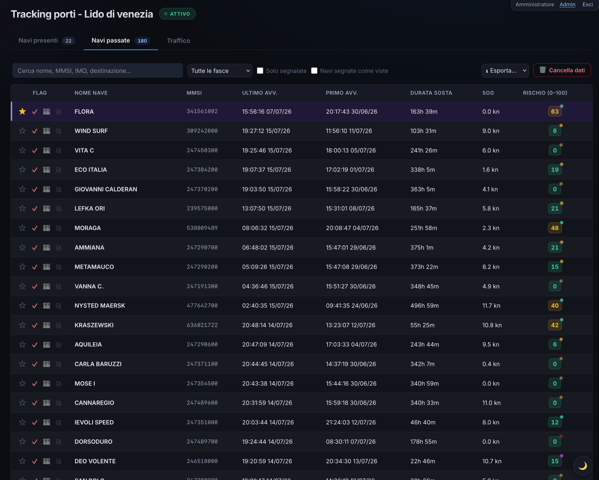
Le navi che hanno visitato l’area in precedenza. Tabella simile a “Navi presenti”, con in più:
- Primo contatto — quando la nave è stata vista per la prima volta;
- Durata sosta — per quanto è rimasta nell’area.
L’ordinamento per colonna funziona come per le navi presenti.
3. Traffico
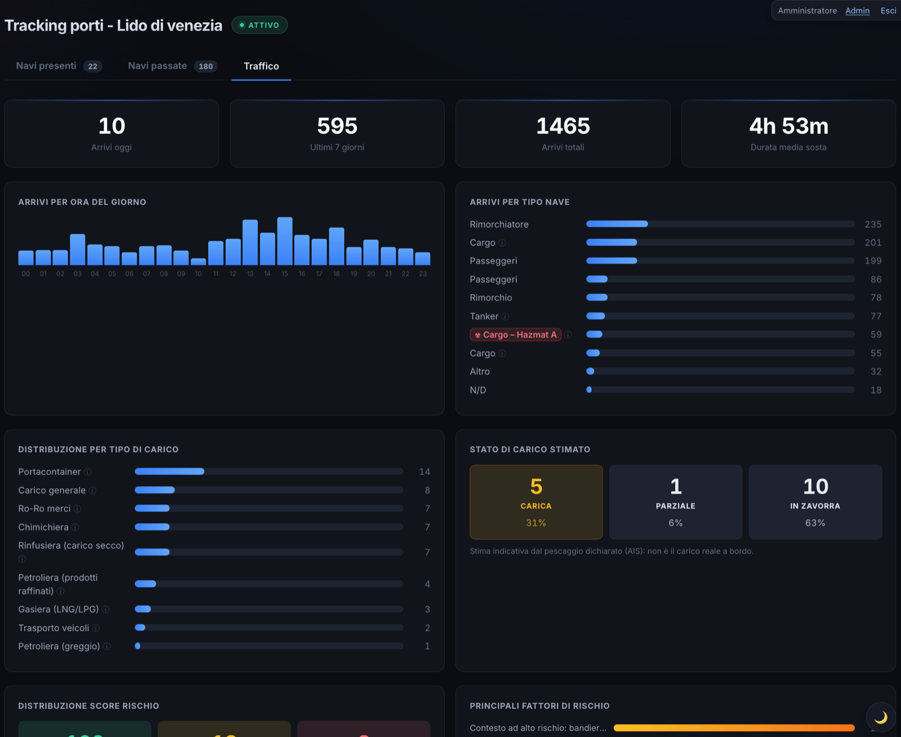
Pannello statistico con indicatori e grafici aggregati.
Schede in alto: Arrivi oggi · Arrivi ultimi 7 giorni · Arrivi totali · Durata media sosta.
Grafici:
| Grafico | Cosa mostra |
|---|---|
| Arrivi per ora del giorno | Barre orarie (00–23) |
| Arrivi per tipo nave | Navi per categoria |
| Distribuzione score rischio | Ripartizione basso/medio/alto |
| Principali fattori di rischio | Quali fattori pesano di più |
| Arrivi giornalieri (ultimi 30 gg) | Andamento del mese |
| Navi con score più alto | Le imbarcazioni più a rischio |
Pannelli inferiori: Navi attese (dirette verso l’area, per parola chiave nella destinazione) e Ultimi eventi porto (arrivi/partenze recenti).
Navi seguite
La sezione 🗺 Navi seguite raccoglie le navi che segui ovunque vadano, anche fuori dalle aree monitorate, tramite uno stream AIS dedicato. Una nave seguita che esce dalla copertura AIS non viene persa: resta agganciata a una rete di ri-acquisizione mondiale e torna tracciata appena ri-trasmette.
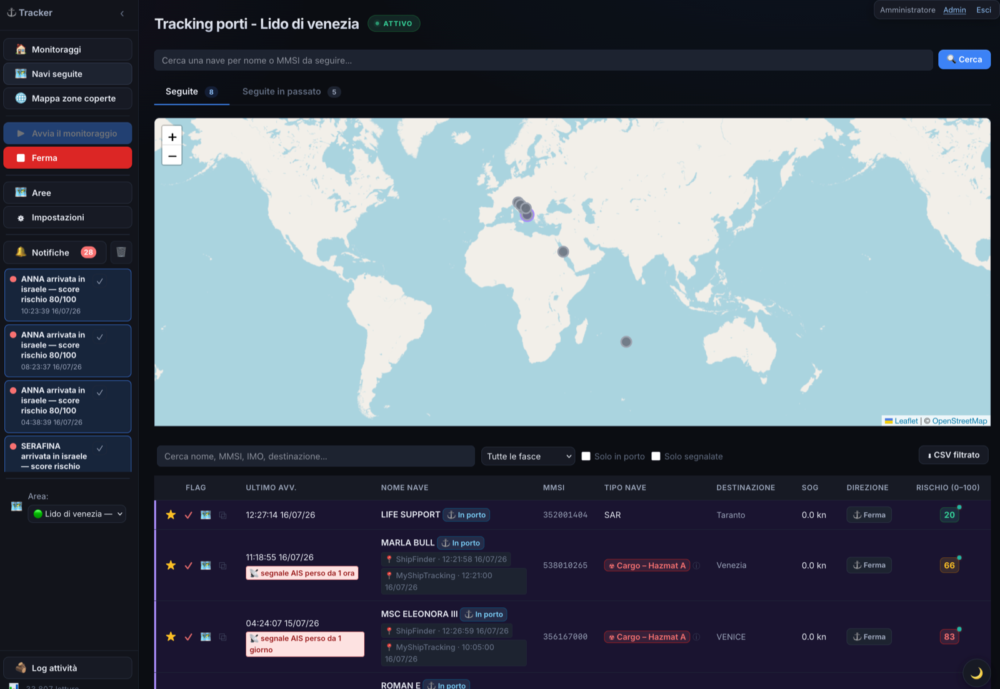
Due sotto-schede: Seguite (attualmente tracciate) e Seguite in passato (storico; una nave ci finisce solo dopo un silenzio molto lungo — default ~6 mesi — o quando smetti di seguirla).
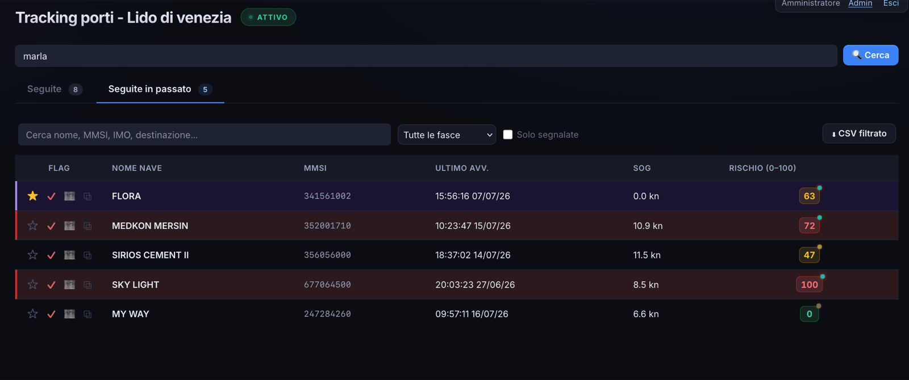
Sulla mappa della sotto-scheda Seguite, due pulsanti in alto a destra (🏷 e 〰, passaci sopra col mouse per vedere a cosa servono) mostrano/nascondono rispettivamente il nome accanto a ogni marker e una piccola scia del tragitto recente, utile per capire da dove sta arrivando la nave. La scelta resta ricordata per i tuoi accessi successivi.
Cerca e segui una nave
In cima alla sezione c’è una barra di ricerca: digita nome o MMSI e premi 🔍 Cerca.
- Si apre una finestra dei risultati che resta aperta mentre raccogliamo i dati. Se il nome corrisponde a più navi, scegli quella giusta.
- La scheda si riempie man mano: identità e dati da VesselFinder / MarineTraffic / Global Fishing Watch (con un’icona che indica dove è stata trovata), eventuali avvisi di sanzioni o PSC, e la posizione live su una mini-mappa.
- La posizione viene recuperata in tempo reale da AISstream: può richiedere fino a ~90 s. Se la nave non trasmette compare un avviso con ↻ Riprova.
- Quando la posizione è disponibile si abilita 🗺 Segui nave: cliccalo per aggiungerla alle seguite.
Chiudere la finestra (Annulla, ✕, clic fuori o Esc) interrompe la ricerca senza seguire nulla.
Ri-seguire una nave dalle “Seguite in passato”
Quando ri-segui una nave che era tra le Seguite in passato (apri il dettaglio e premi 🗺 Segui nave), l’app la rimette subito tra le seguite e avvia in background la ricerca della posizione:
- se la nave sta trasmettendo, resta tra le seguite e la posizione si aggiorna;
- se entro ~90 secondi non trasmette, torna tra le “Seguite in passato” e ricevi una notifica di mancato ritrovamento.
Dettaglio nave
Cliccando qualsiasi riga della tabella (o una notifica di una nave) si apre la scheda completa.
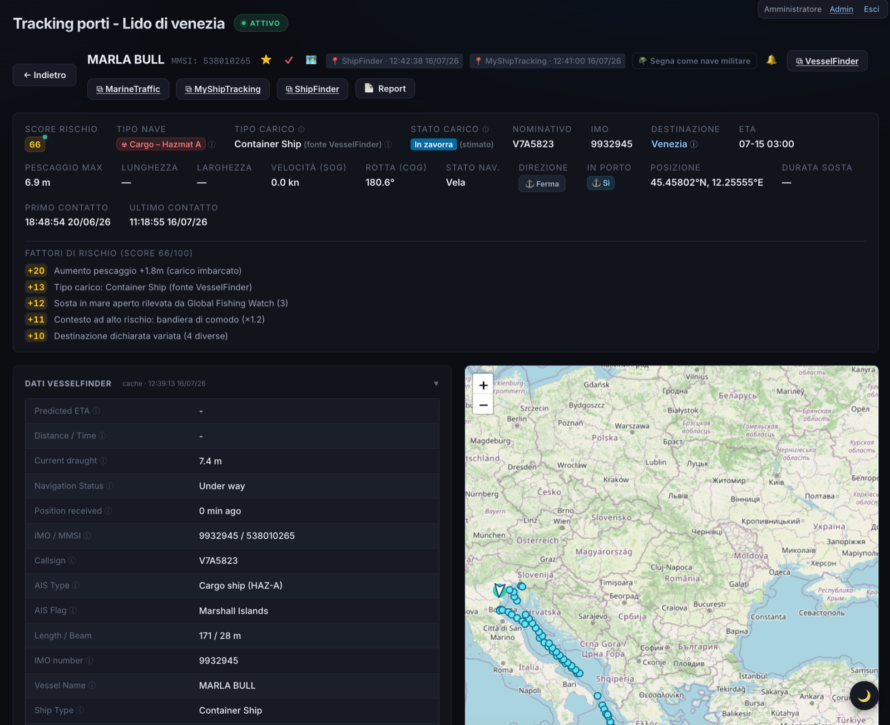
Intestazione e azioni
- ← Indietro — torna alla lista
- ★ Segnala / ✓ Vista — segnalazione / marca come esaminata
- 🪖 Segna come nave militare — classifica la nave come militare (riga rossa, rischio massimo)
- 🔔 / 🔕 — silenzia o riabilita le notifiche automatiche per questa nave
- ⧉ VesselFinder / MarineTraffic / ShipFinder / MyShipTracking — apri la scheda esterna
- Report — genera un report della nave
Griglia informazioni
Tutti i dati disponibili della nave:
| Campo | Significato |
|---|---|
| Score rischio | Badge colorato 0–100 |
| Tipo nave | Categoria; “☢ Hazmat” se trasporta merci pericolose |
| Tipo carico | Classe merceologica (portacontainer, petroliera, chimichiera, gasiera, rinfusiera…) con la fonte tra parentesi |
| Stato carico | Stima carica / parziale / in zavorra dal pescaggio dichiarato |
| Nominativo | Indicativo radio (call sign) |
| IMO | Numero IMO di registrazione |
| Destinazione | Porto dichiarato |
| ETA | Orario stimato di arrivo |
| Pescaggio max | Profondità dello scafo in acqua (m) |
| Lunghezza / Larghezza | Dimensioni fisiche |
| SOG / Rotta | Velocità e direzione corrente |
| Stato navigazione | Ormeggiata, in navigazione, ecc. |
| Direzione | In entrata / in uscita / ferma |
| Posizione | Ultima latitudine e longitudine |
| Durata sosta | Tempo trascorso dall’arrivo |
| Primo / Ultimo contatto | Timestamp del primo e ultimo dato ricevuto |
Fattori di rischio
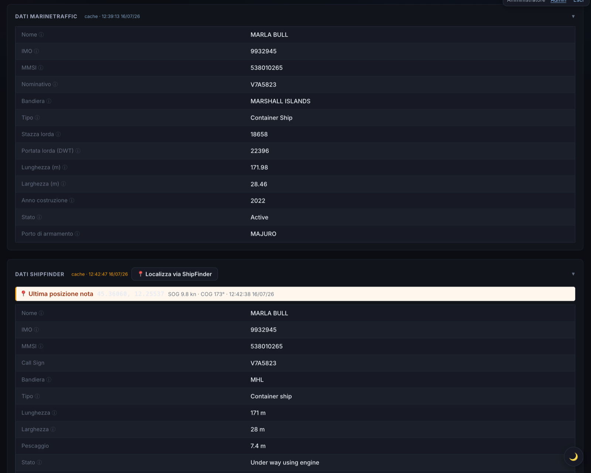
Lista dei fattori che hanno contribuito al punteggio, con i punti di ciascuno. Se non ci sono anomalie compare “Nessuna anomalia rilevata”.
Dati VesselFinder / MarineTraffic
Se abilitati nelle impostazioni, mostrano informazioni aggiuntive recuperate da questi servizi (bandiera, stazza, anno di costruzione…), con indicazione se sono in cache. Il recupero è automatico in background per le navi viste di recente.
Dati ShipFinder e MyShipTracking (ri-localizzazione delle navi seguite)
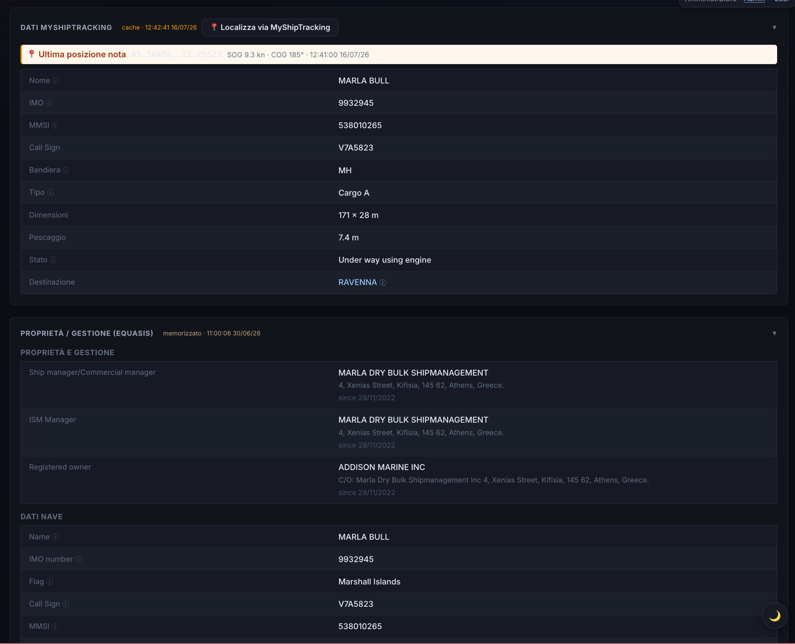
Se abiliti Import ShipFinder e/o Import MyShipTracking, compaiono i relativi pannelli. Oltre ai dati statici, queste fonti offrono la posizione dell’ultimo avvistamento, che serve a ritrovare le navi seguite che l’AIS non vede più:
- Automatico — per ogni nave seguita che non trasmette da un po’, l’app interroga periodicamente queste fonti in background. Se trova una posizione, compare sulla mini-mappa come marker distinto (arancione = ShipFinder, teal/ciano = MyShipTracking), senza alterare la traccia AIS, lo score o il replay.
- Badge dedicato — quando esiste una posizione compare accanto al nome un badge 📍 vista su ShipFinder/MyShipTracking · , distinto dal badge giallo 🔍 in ricerca (che riflette lo stato AIS). Il badge “in ricerca” si spegne solo con un segnale AIS reale.
- Manuale — il pulsante 📍 Localizza via ShipFinder / MyShipTracking recupera subito la posizione corrente.
I pannelli compaiono solo se l’integrazione è attiva (Impostazioni → Import…). Di default sono spenti. Sulla mappa delle Navi seguite, una nave che l’AIS non vede più viene mostrata sulla sua posizione SF/MST più recente (marker grigio) e torna sull’AIS live appena ri-trasmette.
Proprietà / gestione (Equasis)
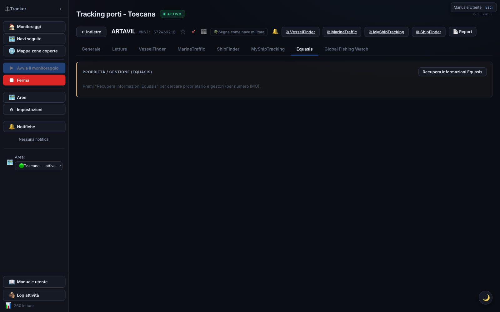
Se il lookup Equasis è abilitato, compare il pannello Proprietà / gestione (Equasis) con il pulsante Recupera informazioni Equasis. Non parte mai in automatico: la ricerca avviene solo al clic e interroga Equasis per numero IMO. Restituisce dati nave, proprietà e gestione (proprietario, gestore ISM, operatore), classificazione, copertura P&I, indicatori di performance/rischio e posizioni recenti. Il risultato viene memorizzato una sola volta e mostrato senza scadenza.
Global Fishing Watch
Se l’arricchimento GFW è abilitato (di default lo è), compare il pannello Global Fishing Watch con l’identità della nave e le tabelle degli eventi comportamentali ricavati dal flusso AIS globale:
- Incontri — due navi che si incontrano in mare aperto (firma di un trasbordo).
- Loitering — sosta prolungata in mare aperto.
- Port visit — scali in porto ricostruiti.
- AIS spento (gap) — transponder spento in navigazione (“dark activity”).
L’arricchimento è proattivo (nessun pulsante). GFW traccia soprattutto navi da pesca, di supporto e reefer/carrier: molte mercantili non sono presenti (nota “non trovata in GFW”). Questi eventi alimentano lo score di rischio.
Sanzioni
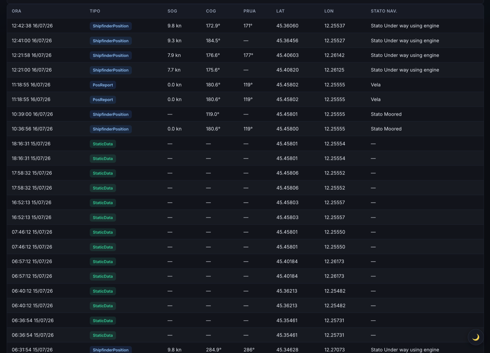
Quando una nave corrisponde a una lista sanzioni, in cima al dettaglio compare — con bordo rosso — il pannello Sanzioni:
- Lista — il regime del match: OFAC SDN (USA), lista consolidata UE, UK OFSI o ONU.
- Programma — il programma sanzionatorio specifico, se disponibile.
- Corrispondenza per — il campo su cui è avvenuto il match: IMO o call sign (alta affidabilità) oppure nome (più debole, possibile omonimia).
- Nome in lista, bandiera, proprietario e alias dell’entità, quando presenti.
Un avviso ricorda di verificare sempre sulla fonte ufficiale (un match solo per nome può essere un falso positivo). Quando l’identificativo è disponibile, Apri scheda ufficiale apre la pagina pubblica. Il pannello compare solo per le navi in lista.
Rendezvous in mare
Se la nave ha avuto un rendezvous confermato con un’altra (rimaste vicine, lente e al largo abbastanza a lungo — firma di un trasbordo nave-nave), compare la sezione Rendezvous in mare con l’elenco degli incontri (altra nave, data/ora, distanza minima, area). Ogni riga è cliccabile e apre la nave coinvolta. Un rendezvous confermato fa scattare una notifica e aggiunge punti al rischio di entrambe le navi.
Mappa posizione
Mappa con la traccia della nave e controlli di riproduzione animata.
- Finestra temporale — preset 6h / 24h / 7gg / tutto, oppure intervallo personalizzato (Da → A, poi Applica).
- ▶ / ⏸ — riproduce/pausa l’animazione della traccia.
- Scrubber — salta a un punto qualsiasi della traccia.
- Velocità — 1× / 5× / 20× / 60× (default 20×), cambiabili durante la riproduzione.
- Includi SF/MST — se le integrazioni sono attive e la nave ha posizioni scrapate, le include nella traccia (nodi ambra = ShipFinder, teal = MyShipTracking).
I marker dell’ultima posizione nota ShipFinder/MyShipTracking mostrati sulla mappa seguono la stessa finestra temporale selezionata per la traccia (preset, intervallo personalizzato o segmento di replay): restringendo la finestra vengono mostrati solo i rilevamenti che vi ricadono, esattamente come per le posizioni AIS. Il pulsante 📍 Localizza via … mostra comunque sempre la posizione appena recuperata.
Letture AIS
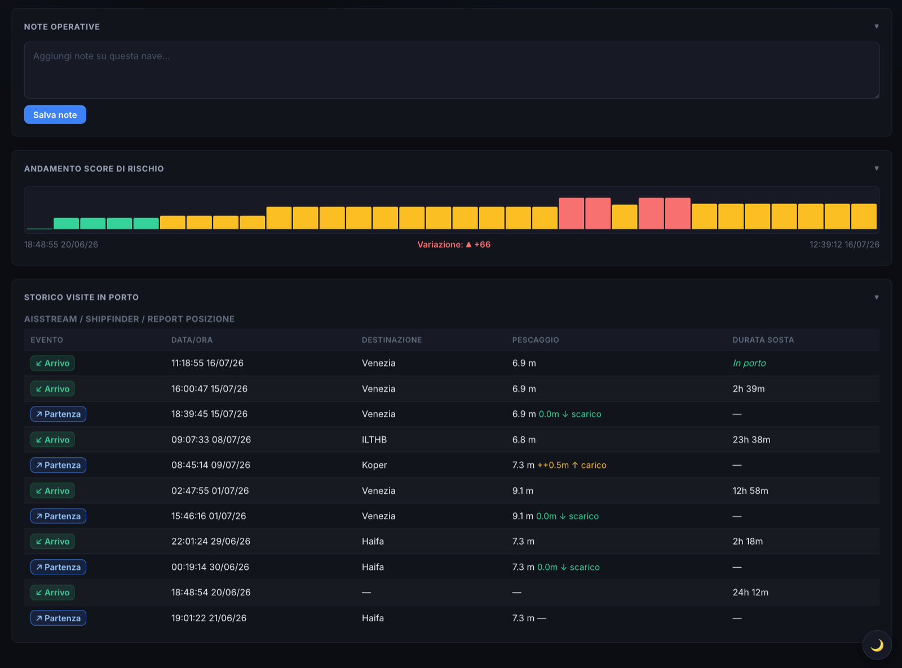
Tabella paginata con tutte le posizioni ricevute in ordine cronologico. Clicca una riga per il dettaglio. I dati grezzi JSON completi sono mostrati solo per i messaggi statici (nome, dimensioni, destinazione…); per i semplici messaggi di posizione i campi utili sono già nella griglia. Naviga con ← Prec e Succ →.
Note operative
Area di testo libero: scrivi qualsiasi annotazione sulla nave e premi Salva note. Le note sono persistenti nel database.
Storico visite in porto
Registro di tutti gli arrivi (↙) e partenze (↗) rilevati per
la nave, con destinazione, pescaggio e durata della sosta. I
codici UN/LOCODE nella destinazione sono risolti nel nome del
porto (es. ITNAP → “Napoli”).
Gestione aree
Apri con 🗺 Aree. Qui aggiungi e rimuovi le aree monitorate senza riavviare l’app.
La schermata contiene:
- un pannello “Aggiungi area” (in alto a sinistra);
- una mappa con tutte le aree come rettangoli (verde = stream attivo, viola = area in vista, blu = altre);
- una tabella con nome, coordinate SW e NE, parola chiave, stato stream, dati salvati e pulsante di eliminazione.
Aggiungere un’area
- Scrivi un nome (obbligatorio) e, se vuoi, una parola chiave (per il filtro “Navi attese”).
- Indica i confini in uno di due modi:
- Coordinate GPS — inserisci a mano
latitudine e longitudine in gradi decimali dei
due angoli SW (Sud-Ovest) e NE (Nord-Est). Es.: SW
40.95, 16.60— NE41.30, 17.10. Durante la digitazione compare un rettangolo di anteprima. - Da mappa — inquadra l’area spostando/zoomando la mappa, poi premi 🎯 Cattura vista corrente: le coordinate si compilano da sole.
- Coordinate GPS — inserisci a mano
latitudine e longitudine in gradi decimali dei
due angoli SW (Sud-Ovest) e NE (Nord-Est). Es.: SW
- Premi ＋ Aggiungi area. L’area viene salvata e il suo stream parte subito.
La latitudine va da -90 a 90 (positiva a Nord), la longitudine da -180 a 180 (positiva a Est). Gli angoli possono essere inseriti in qualsiasi ordine: vengono riordinati automaticamente.
Rimuovere un’area
Premi 🗑 sulla riga dell’area. Insieme all’area viene eliminato tutto lo storico correlato (letture, navi ed eventi porto). Per sicurezza la cancellazione non è immediata: compare un avviso con un conto alla rovescia e un pulsante ↶ Annulla per 10 secondi. Diventa definitiva allo scadere del tempo o quando lasci la pagina Aree.
Deve restare almeno un’area: il pulsante di eliminazione è disabilitato quando ne resta una sola.
Mappa delle zone coperte
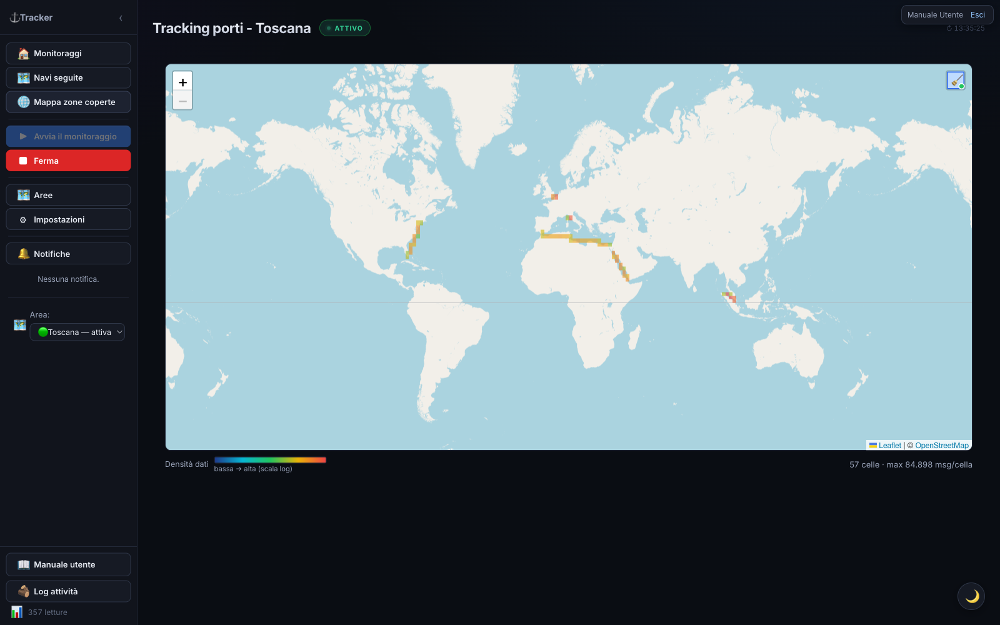
Si apre da 🌐 Mappa zone coperte. Mostra una mappa del mondo dove ogni cella è colorata in base a quanti messaggi AIS si ricevono in quella zona: dal blu (pochi) al rosso (molti). Serve a capire a colpo d’occhio dove la copertura AIS è buona e dove ci sono “buchi”.
Come utente puoi aprire la mappa e vedere i dati
correnti (per te è in sola lettura). La mappa è
disponibile anche senza login all’indirizzo
/heatmap. L’avvio e lo stop della raccolta dati
sono riservati agli amministratori.
Un pulsante 🧹 in alto a destra (passaci sopra col mouse per vedere a cosa serve) nasconde — acceso di default — le celle con un solo messaggio: quasi sempre rumore isolato (es. artefatti di posizionamento satellitare lontani da qualsiasi rotta reale) piuttosto che copertura vera. La scelta resta ricordata per i tuoi accessi successivi.
Impostazioni
Apri con ⚙ Impostazioni. Le impostazioni sono organizzate in schede: Generali, Aree, Integrazioni esterne, Parametri, Backup / Ripristino e la scheda tecnica 📡 Diagnostica AIS.
Scheda Generali
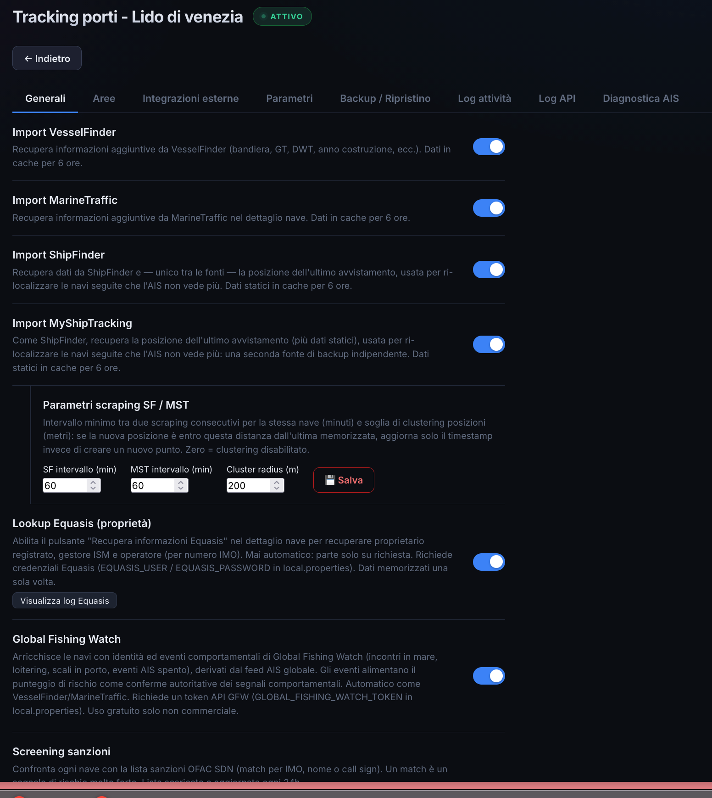
In alto il pannello Monitoraggio aree mostra tutte le aree con un toggle per avviare/fermare lo stream di ciascuna (🟢 attivo / ⚪ spento): così monitori più aree insieme.
Sotto, i toggle delle sorgenti dati e delle funzioni:
| Opzione | Funzione |
|---|---|
| VesselFinder / MarineTraffic | Recupera dati aggiuntivi nel dettaglio nave. Cache 6 ore. |
| Import ShipFinder | Dati + ultima posizione per ri-localizzare le navi seguite (marker arancioni). Spento di default. |
| Import MyShipTracking | Seconda fonte di posizione indipendente (marker teal). Spento di default. |
| Screening sanzioni | Confronta ogni nave con la lista OFAC SDN (match per IMO/nome/call sign). Aggiornata ogni 24 h; Aggiorna lista forza il download. |
| Liste sanzioni aggiuntive (UE / UK / ONU) | Aggiunge le liste UE, UK OFSI e ONU (via OpenSanctions). Attiva solo con lo screening sanzioni acceso. Default attivo. |
| Screening Port State Control (Paris/Tokyo MoU) | Performance bandiera white/grey/black + navi bandite dal Paris MoU. |
| Lookup Equasis (proprietà) | Abilita il pulsante on-demand nel dettaglio. Mai automatico. |
| Global Fishing Watch | Identità + eventi comportamentali (proattivo). Attivo di default. |
| Notifiche | Interruttore generale delle notifiche in-app. |
| Notifica rientro nave / cambio area / score alto / nuova banchina / caratterizzazione banchina | Attiva le singole categorie di notifica in-app. |
| Escludi tanker | Non assegna il punteggio “tipo nave” agli scafi tanker (utile monitorando il trasporto di armi). |
| Controlla salto di posizione / Controlla blackout AIS | Includono nel rischio i relativi segnali. Disattivali in aree con copertura AIS scarsa (falsi positivi). Default attivi. |
| Livello nautico OpenSeaMap (tile) | Simboli nautici come immagine unica (tutto o niente). Default attivo. |
| Marcatori OpenSeaMap (selezionabili) + Elementi da mostrare | Marcatori ⚓ filtrabili per categoria (porti, ormeggi, ancoraggi, marine, fari, boe, pericoli…). Default attivi. |
| Pesi rischio per tipo di carico | Punti assegnati a ogni classe merceologica. Modifica e 💾 Salva pesi (effetto immediato). |
| ⬇ Esporta CSV | Scarica tutte le letture in CSV. |
| ⬇ Scarica backup / ⬆ Ripristina | Scarica/ricarica il file del database. |
| Lingua | Italiano / English. |
Attenzione: il ripristino del database sostituisce tutti i dati attuali ed è irreversibile. Scarica un backup prima di procedere. Dopo il ripristino i dati vengono riassegnati all’area corretta in base alle coordinate.
Scheda Aree
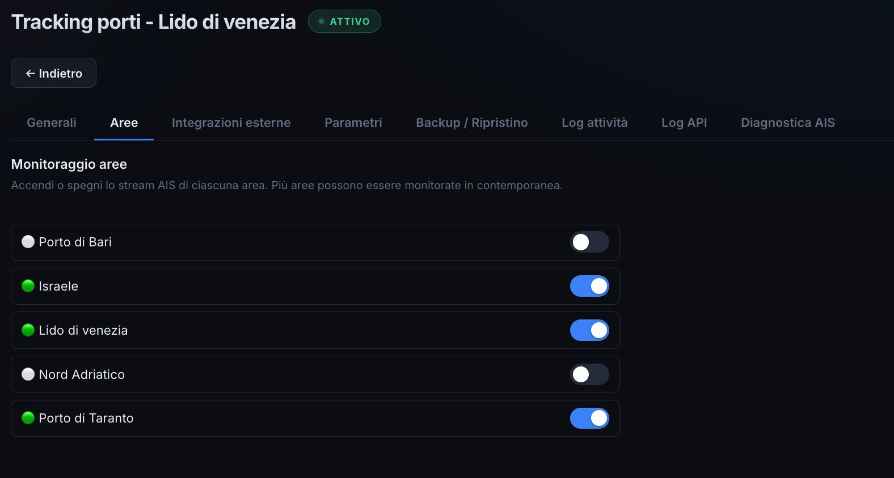
Mostra le aree configurate con i toggle di monitoraggio (equivalente al pannello in cima ai Generali) e i collegamenti alla gestione aree.
Scheda Integrazioni esterne (Telegram + webhook)
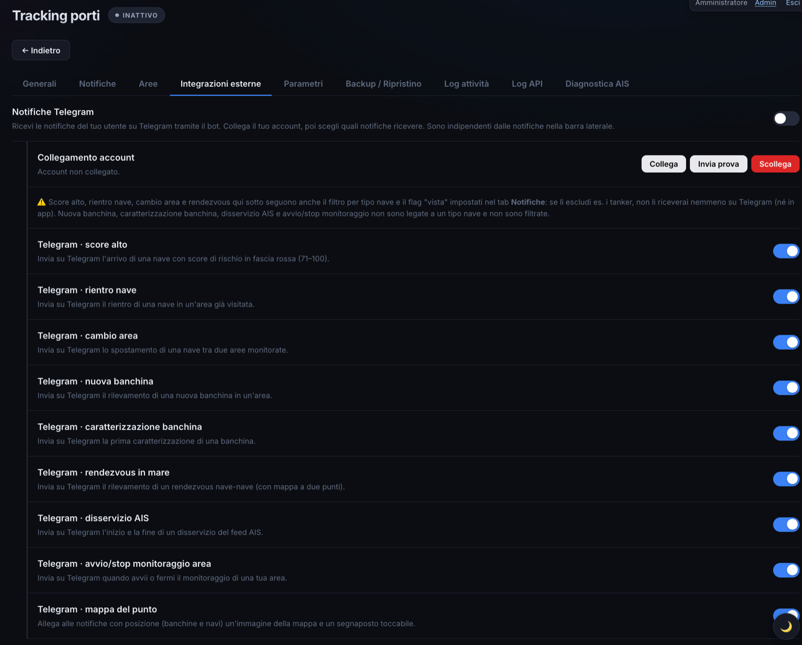
Qui colleghi i canali esterni a cui inviare le notifiche: Telegram (in alto) e i webhook in uscita (in fondo).
Collegare Telegram (funziona se l’amministratore ha configurato il bot):
- Premi Collega. Compare un link (e un codice).
- Apri il link su Telegram (o invia al bot
/start <codice>) e avvia il bot. - Il bot risponde “Account collegato” e il tab si aggiorna: ora ricevi le notifiche su Telegram.
Per smettere premi Scollega (o
/stop). Con Invia prova verifichi
il collegamento.
Quali notifiche ricevere — l’interruttore Notifiche Telegram accende/spegne tutto; sotto, un toggle per categoria: Score alto, Rientro nave, Cambio area, Nuova banchina, Caratterizzazione banchina, Disservizio AIS, Avvio/stop monitoraggio area. Il toggle Mappa del punto allega alle notifiche con posizione un’immagine della mappa più un segnaposto toccabile. I toggle Telegram sono indipendenti da quelli in-app.
Le notifiche di una nave (Score alto, Rientro, Cambio area) mostrano su Telegram i pulsanti 🛰️ Segui e ⭐ Segnala per agire direttamente dal messaggio.
🔗 Webhook in uscita — inoltra gli eventi delle tue aree a un indirizzo web (Slack, Discord, un SIEM o un tuo servizio):
- Incolla l’URL del webhook.
- Scegli il formato: Generic (JSON grezzo), Slack o Discord.
- Spunta quali eventi inviare (alto rischio, rendezvous, cambio area, rientro, banchine, disservizio AIS).
- (Facoltativo) imposta un secret: aggiunge
una firma
X-Tracker-Signatureverificabile dal destinatario. - Aggiungi webhook. Prova invia un evento di test; l’interruttore lo attiva/disattiva; Elimina lo rimuove.
I webhook sono personali (solo per le tue aree). Non sono ammessi indirizzi interni/privati. Massimo 10 per utente.
Scheda Parametri
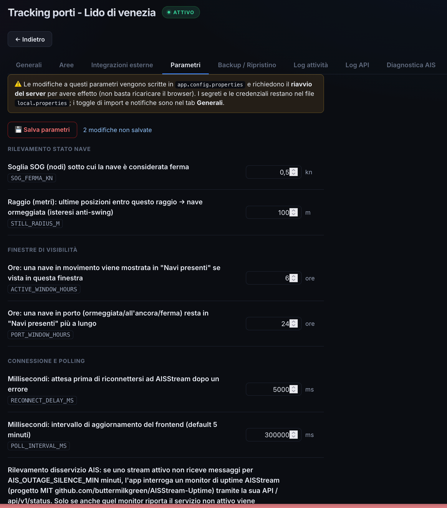
Permette di modificare dall’interfaccia i parametri di funzionamento dell’app (soglie di stato nave, finestre temporali, retention, banchine, pesi dello score…). Ogni campo ha una descrizione. Modifica i valori e premi 💾 Salva parametri.
⚠️ Importante: questi parametri vengono letti dal server solo all’avvio. Dopo il salvataggio è necessario riavviare il server perché le modifiche abbiano effetto — ricaricare il browser non basta. I segreti (chiavi API, password) non sono modificabili da qui per sicurezza.
Scheda Backup / Ripristino
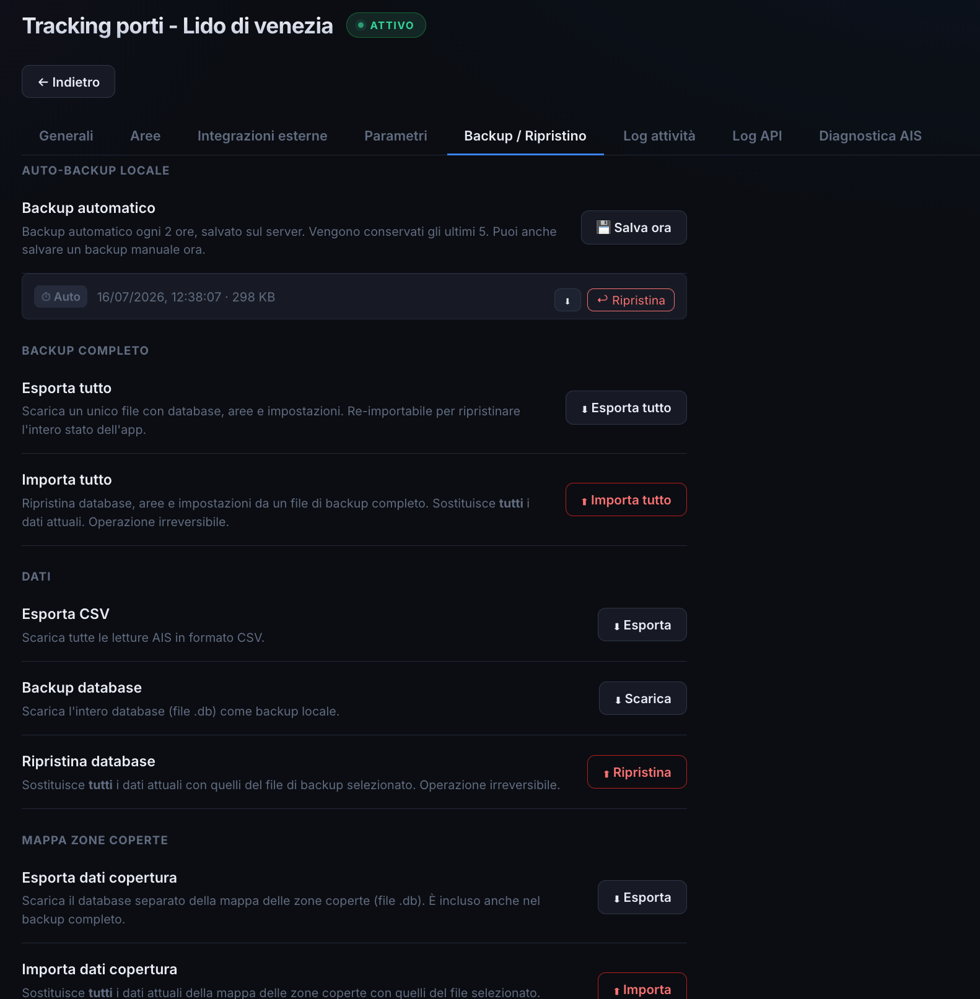
Da qui scarichi un backup del database, ripristini un backup salvato ed esporti i dati. I dati della Mappa delle zone coperte sono in un database separato, esportabile/importabile a parte e comunque incluso nel backup completo.
Scheda Diagnostica AIS
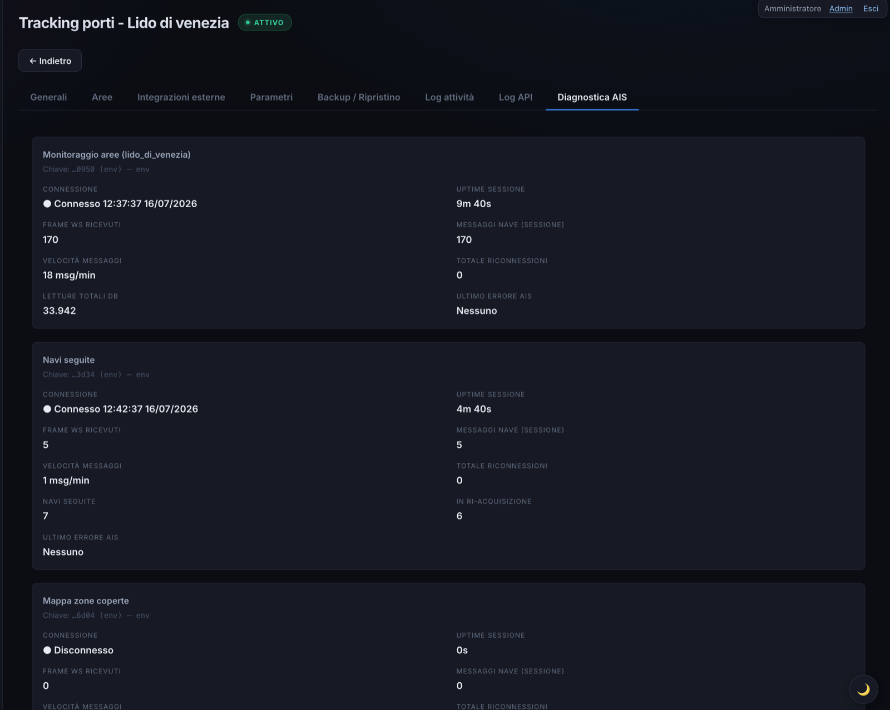
Mostra lo stato della connessione al flusso dati (si aggiorna ogni 5 s):
- Connessione — Connesso / Disconnesso
- Uptime sessione — da quanto il flusso è attivo
- Frame WS ricevuti / Messaggi nave / Velocità messaggi
- Riconnessioni — quante volte la connessione è stata ripristinata
- Ultimo errore — l’eventuale ultimo errore
Banner di disservizio AIS
Se per alcuni minuti un monitoraggio attivo non riceve nessun segnale AIS, l’app verifica lo stato del servizio con un monitor di uptime indipendente. Solo se anche quello conferma il disservizio, in cima alle pagine di monitoraggio compare un avviso giallo. Se l’area è semplicemente silenziosa ma il servizio è attivo, non compare alcun avviso.
Lo stesso avviso compare anche se un monitoraggio o lo stream delle navi seguite resta bloccato a riconnettersi ripetutamente per alcuni minuti — senza mai stabilizzarsi, anche quando ogni singolo tentativo dura solo pochi secondi (in questo caso senza bisogno di conferma esterna, perché una nostra connessione che non si stabilizza è un segnale inequivocabile). In entrambi i casi puoi chiudere l’avviso con ✕; scompare da solo quando la connessione torna stabile.
Punteggio di rischio
Ogni nave riceve un punteggio da 0 a 100, calcolato automaticamente. È indicativo e non sostituisce una valutazione esperta.
| Colore | Fascia | Significato |
|---|---|---|
| Verde | 0–30 | Rischio basso |
| Giallo | 31–70 | Rischio medio — monitorare |
| Rosso | 71–100 | Rischio alto — esaminare |
Indicatori fonte sul badge:
- Punto magenta: calcolato con dati VesselFinder
- Punto oro: dati MarineTraffic
- Punto arancione: entrambe le fonti
- Punto rosso (con alone): nave in una lista sanzioni (OFAC / UE / UK / ONU)
- Etichetta blu (Paris/Tokyo MoU ⚓): segnale dalle liste Port State Control
- Punto verde acqua: dati Global Fishing Watch
Passa il cursore sul badge per i dettagli dei fattori e le fonti.
Peso per tipo di carico: un fattore dipende dalla classe merceologica della nave, con pesi configurabili in ⚙ Impostazioni → “Pesi rischio per tipo di carico” (effetto immediato). Con “Escludi tanker” attivo le classi su scafo tanker non assegnano punti.
Navi militari: automaticamente a rischio massimo (riga rossa).
Notifiche
Oltre agli avvisi temporanei in sovrimpressione, l’app tiene uno storico delle notifiche nella barra laterale, che si apre/chiude con 🔔 Notifiche (lo stato viene ricordato).
Quando viene generata una notifica (ogni categoria è abilitabile a parte dalle Impostazioni):
Eventi nave:
- Rientro nave — una nave già vista in un’area torna a essere rilevata nella stessa area.
- Cambio area — una nave vista in un’area viene rilevata in un’altra area.
- Score alto — una nave arriva con score in fascia rossa (71–100).
Eventi banchina:
- Nuova banchina — durante il ricalcolo viene rilevata una nuova banchina.
- Caratterizzazione banchina — una banchina viene caratterizzata per la prima volta.
Altri eventi:
- Rendezvous in mare — due navi sostano vicine, lente e al largo abbastanza a lungo (possibile trasbordo). La notifica include una mappa con i due punti uniti da una linea.
Lettura di una notifica:
| Elemento | Significato |
|---|---|
| Bollino 🟢 / 🟡 / 🔴 | Colore per fascia di rischio (notifiche nave); le notifiche banchina hanno un bollino dedicato |
| Testo | Nome nave e area, o area di partenza/arrivo (cambio area), o nome/categoria banchina |
| Pulsante ✓ | Segna come letta |
| Pulsante 🗑 | Elimina (avviso con ↶ Annulla per 5 s) |
Clicca sulla notifica (fuori dai pulsanti): per una nave apre la sua scheda; per una banchina passa alla mappa dell’area e centra la banchina.
Silenziare una singola nave: nel dettaglio, il pulsante 🔔 (attive → clicca per silenziare) / 🔕 (silenziate → clicca per riabilitare). Una nave silenziata non genera notifiche di rientro né di cambio area.
Le notifiche da leggere sono in grassetto e contano nel badge rosso. Si conservano le ultime 100; le più vecchie vengono eliminate. Cancellando i dati di un’area si rimuovono anche le sue notifiche.
Esportare i dati
Tutti gli export vengono scaricati direttamente dal browser:
- CSV — ⬇ CSV filtrato nella toolbar Navi presenti/passate esporta la vista corrente (filtrata e ordinata); ⚙ Impostazioni → Esporta CSV esporta invece tutte le letture grezze.
- GeoJSON / KML (per QGIS o Google Earth) — accanto al CSV trovi ⬇ GeoJSON e ⬇ KML. Quattro sorgenti: la lista navi filtrata (punti), la traccia di una nave (dal dettaglio), il replay di un’area (una linea per nave) e le banchine (poligoni).
Installare l’app (PWA)
Tracker Porti è una app installabile (PWA): puoi aggiungerla alla schermata home del telefono o installarla sul desktop, e si apre a tutto schermo.
- Su telefono — browser → menu → “Aggiungi a Home” (iPhone/Safari) o “Installa app” (Android/Chrome).
- Su desktop — in Chrome/Edge, icona di installazione nella barra degli indirizzi, o menu → “Installa Tracker Porti”.
Se manca la connessione, l’app mostra una schermata “Sei offline” con un pulsante Riprova (i dati AIS sono in tempo reale e richiedono la rete). L’accesso resta protetto: serve sempre il login.
Domande frequenti
La tabella è vuota — cosa faccio? Verifica che il monitoraggio per l’area sia avviato (badge ● ATTIVO in alto) e che l’area contenga traffico navale. Controlla le aree in monitoraggio dal pannello “Monitoraggio aree” nelle Impostazioni, e la connessione dalla Diagnostica AIS.
Come faccio a non perdere le navi già controllate? Usa ✓ Vista su ogni riga: la nave si attenua e la distingui dalle non ancora esaminate.
Ho cambiato area e le navi sono scomparse — è normale? Sì. Ogni area ha dati e stream indipendenti. Cambiare area nel menu è solo un cambio di vista: non avvia né ferma alcuno stream. I dati della precedente area restano; tornandoci li rivedi.
Posso monitorare più aree contemporaneamente? Sì. ⚙ Impostazioni → Monitoraggio aree e attiva il toggle di ogni area. Poi passi da una all’altra con il menu a tendina.
Le navi militari sono sempre rosse? Sì. Vengono contrassegnate automaticamente con punteggio massimo e riga rossa.
Posso esportare i dati? Sì: CSV, GeoJSON e KML — vedi Esportare i dati.